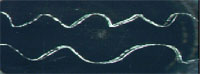
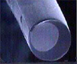
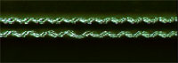

独自技術で複合した繊維で伸縮性に優れたファッション・インナー素材向け繊維
HOME
製品情報
シデリア®
項 目
内 容
1.素材名
ナイロン／ポリウレタン
2.商品名
シデリア
3.
商品の説明
シデリアはKBセーレンの得意とするコンジュゲート技術により生まれたナイロンとポリウレタンとの複合繊維である。熱処理をする事で自己捲縮を発現して適度な伸縮性が得られる。
4.
商品の特徴と技術背景
(1)
きれいな編地表面
熱処理をすると均一なスパイラル捲縮が得られ、きれいな編面になる。
(2)
ソフトパワーな伸縮性
カバリングには出せない適度な締付け感と履いている事を意識させないソフトなフィット感、夏場の暑さでの蒸れを最小限にでき、国内、外ともに好評。
(3)
透明感
ナイロン、ウレタン一体型でカバリングでは出来ない薄さで優れた透明感。
(4)
さらさら感
優れたストレッチバック性と低い応力で伸びる柔らかさを有する。ローカウントフィラメントでもソフトでさらさら感（ざらざら感ではなく）を感じさせる。
5.銘柄
銘柄
仕立
捲量ｘ本数=重量/ケース
19T/2 BCO
パーン（リターナブル）
1.04kg*24=25.0kg
22T/2 BCO
パーン（リターナブル）
1.04kg*24=25.0kg
22T/3 BCO
パーン（リターナブル）
1.04kg*24=25.0kg
56T/4 BCO
パーン（リターナブル）
1.04kg*24=25.0kg
捲縮発現前後
シデリア断面形状
前


後

6.
取り扱い注意点
(1)
熱セット性に優れている事から仕上げの温度に対して注意が必要。
(2)
高圧染色、ポリエステルとの同浴染色は熱セット性の関係で不可。
(3)
ポリウレタンは全般的に黄変し易い傾向にあるのでNOxガス、日光や蛍光灯に直接長時間晒す事を避ける。
(4)
原糸の使用前になるべくコンディショニング時間（室内エージング）を24時間以上取る。
(5)
ポリウレタンは低温（10℃以下）では使用時に問題が起き易いので低温環境での糸の取り扱いを避ける。
●問い合わせ先●
ＫＢセーレン株式会社
kbs.info@kb.seiren.com